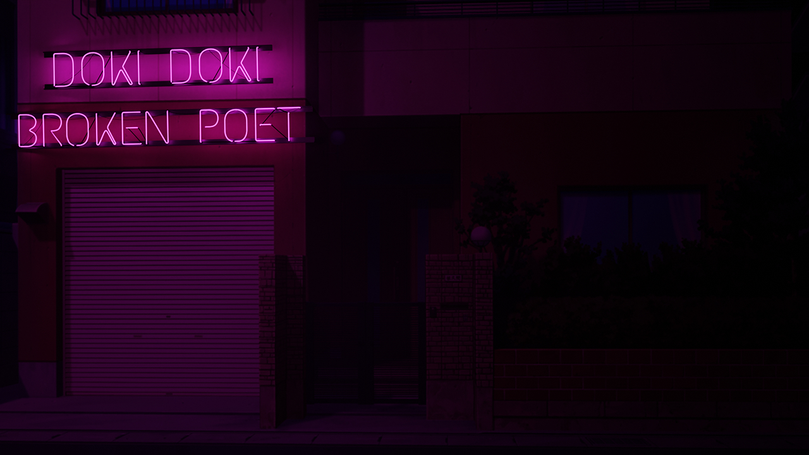

Doki Doki Broken Poet (Act 1)
Author: M3rcurialEquilibrium
Description:
The festival has passed. All 4 girls read their poems, but no one really cared. At least at the end of the day, everyone seems proud they kept to their vision of what the club should be. Sayori is happy you joined the club, but despite that, you haven't really connected with anyone new. Her puppy eyes are too much to bear, and you reluctantly promise to try and get to know the other members of the club better. Natsuki in particular is puzzling. You can't really put a finger on why she continues to come to club despite seemingly not really getting along with anyone, and that is somewhat intriguing. Maybe you can break the ice with her... Maybe you can be her friend. Maybe something more.